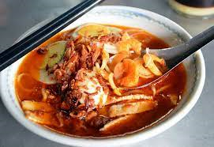
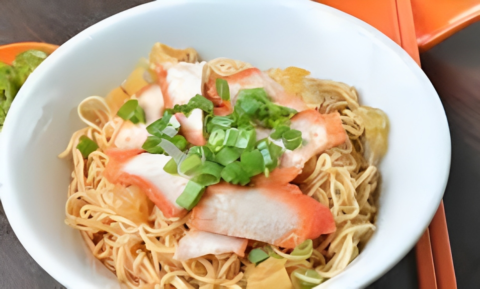
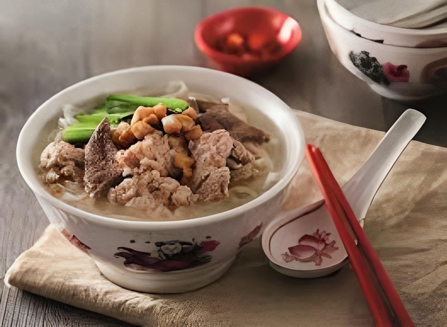
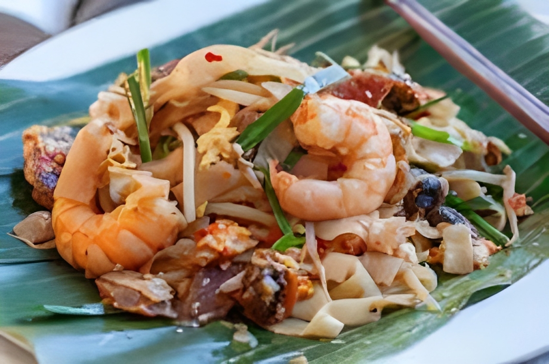

ALACAT
PRAWN MEE

Price : RM10.00
Introduce :
The Penang variant can be easily distinguished from the
other variants by its characteristic spicy prawn broth. It primarily consists of rice
vermicelli and thicker yellow egg noodles, while the broth is made with prawn heads and shells,
and pork ribs.Sliced prawns or shrimps are also added into the dish, along with pork slices, hard
boiled eggs, and kangkung . Some of the Hokkien Mee are served with bean sprouts, fried shallots,
lard and sambal too. In Penang, pig skin, an ingredient rarely served in Kuala Lumpur, is a
common topping as well.
WANTAN MEE

Price : RM10.00
Introduce :
The dish usually consists of egg noodles served in a hot broth, garnished with leafy vegetables
and wonton dumplings. The types of leafy vegetables used are usually gai-lan, also known as Chinese
broccoli or Chinese kale. Another type of dumpling known as shui jiao (水餃) is sometimes served in
place of wonton.
PORK NOODLE

Price : RM10.00
Introduce :
It mainly uses kway teow, fish balls and fish cakes as the main ingredients.
Adding the soup made with pork bones gives him a delicious and sweet soup base.
CHAR KWEY TEOW

Price : RM10.00
Introduce :
It is made from flat rice noodles or kway teow of approximately 1 cm or about 0.5 cm
in width, stir-fried over very high heat with garlic, light and dark soy sauce,
chilli paste, whole prawns, shelled blood cockles, chopped Chinese chives, slices of
Chinese sausage, and bean sprouts.